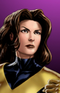
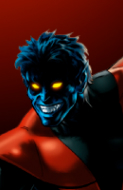

Selecione um Personagem







Ciclope
Ciclope (Scott Summers). Seu poder principal consiste em disparar poderosos feixes de energia pura pelos olhos. Ele é mundialmente reconhecido por sua disciplina.


Ciclope (Scott Summers). Seu poder principal consiste em disparar poderosos feixes de energia pura pelos olhos. Ele é mundialmente reconhecido por sua disciplina.